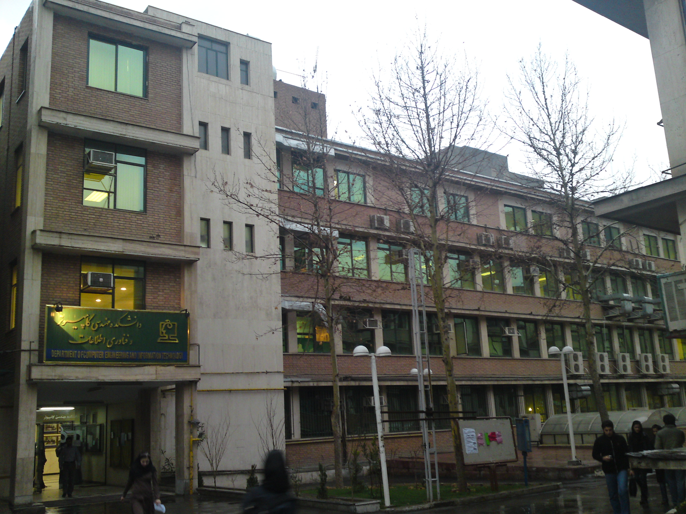

Ramtin Mehdizadeh Seraj
I am a Master of Science student in the Department of Computing Science at Simon Fraser University and affiliated with Natural Language Laboratory.
I am very fortunate to work under the supervision of Dr. Anoop Sarkar on Statistical Machine Translation.
 We are drowning in information but starving for knowledge. - John Naisbitt
We are drowning in information but starving for knowledge. - John Naisbitt

Education
Master of Science (Fall 2013 - present)
School of Computing Science
Simon Fraser University
 8888 University Drive
8888 University Drive
Burnaby, BC V5A 1S6, Canada
Bachelor of Engineering (Fall 2008 - Summer 2013)
Department of Computing Engineering
Amirkabir Univeristy of Technology
Thesis : Unsupervised Named-Entity Recognizer for Farsi
Supervisor : Dr. Shahram Khadivi

 All models are wrong, but some are useful. - George Box
All models are wrong, but some are useful. - George Box

Publications and Talks
3rd Pacific Northwest Regional NLP Workshop - Microsoft Research
Under Construction
 Be the change that you wish to see in the world. - Mahatma Gandhi
Be the change that you wish to see in the world. - Mahatma Gandhi
Miscellaneous
SFU - Machine Learning Reading Group - A reading group that meets weekly to discuss current topics in Machine Learning